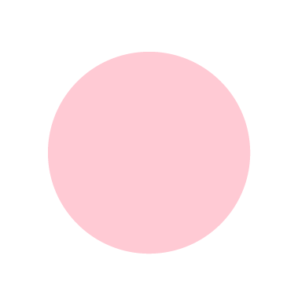
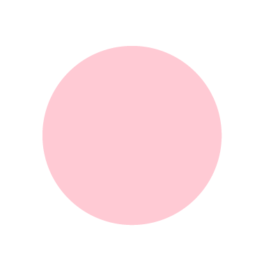
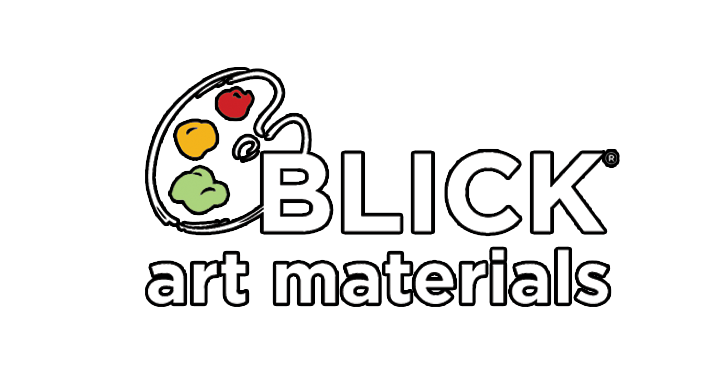
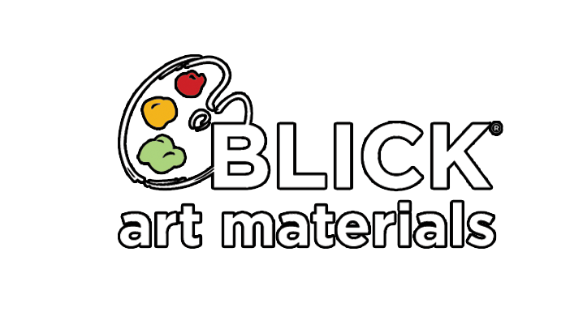
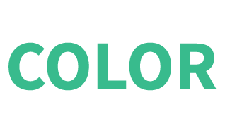
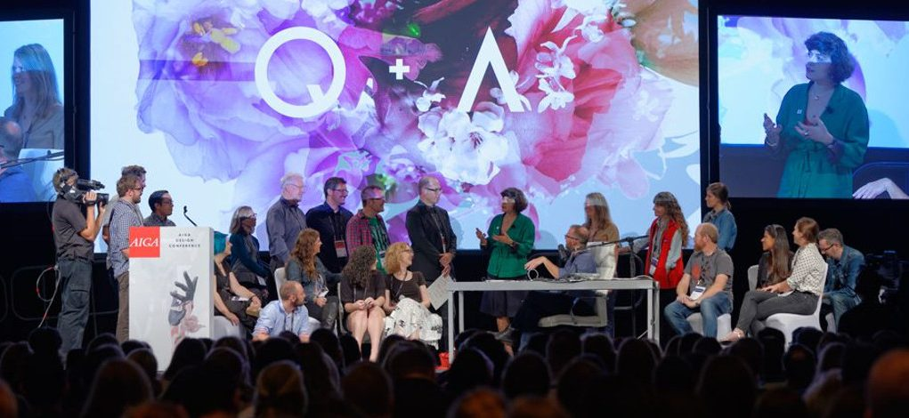
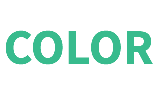
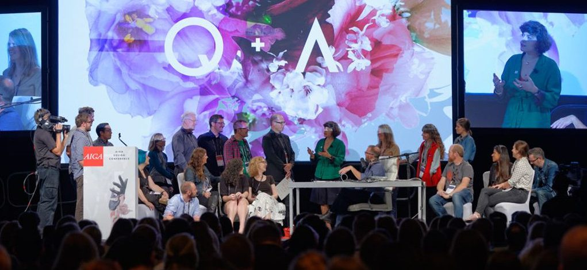

 



 



COLOR CONFERENCE
2018 : FIND YOUR COLOR
Find your color conference will help you
explore many knowledges about the color in design/technology.
This conference will give you great opportunity
to meet famous designers from many places,
discover new things, and become a trendy leader
in design field. Be a part of it.
SCHEDULE


DAY 1
KATE MOROSS : WHAT IS
GOOD/BAD COLOR CHOICE?
11:00AM - 1:00PM
FELVEY HALL, MICA BROWN
CENTER
JAEMIN LEE : COLOR AND
TYPOGRAPHY WORKSHOP
3:00PM - 4:30PM
ROOM 320, MICA BROWN CENTER
DAY 2
JOHN MAEDA : COLOR IN
DESIGN/TECHNOLOGY
11:00AM - 2:00PM
BARBER CONFERENCE ROOM,
JOHNS HOPKINS UNIVERSITY
DAY 3
JAEMIN LEE : VISUALIZING
COLOR
11:00AM - 1:00PM
KAFUMAN AUDITORIUM,
UNIVERSITY OF BALTIMORE
KATE MOROSS : PANTONE COLOR
COLLABORATION WORKSHOP
- WHAT IS YOUR COLOR?
3:00PM - 4:00PM
ROOM 320, MICA BROWN CENTER